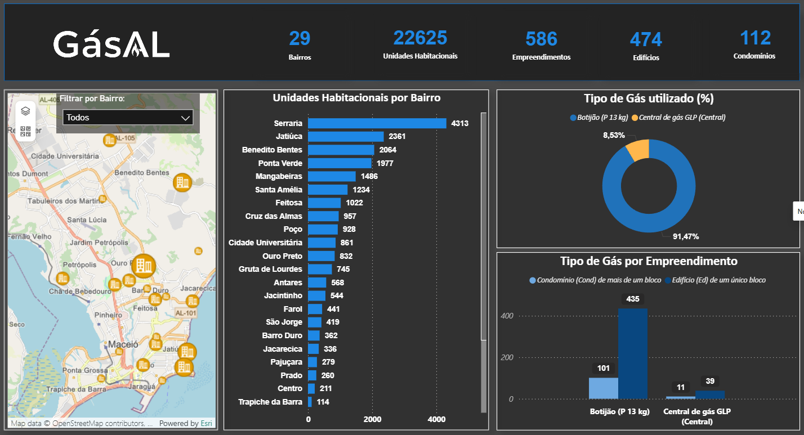

Projetos

Projeto que visa obter insights através da Pesquisa de Satisfação Semestral realizada
Projeto que criei com o intuito de gerar insights no que se diz respeito a avaliação da empresa contratante.
Ver Projeto

Projeto que visa o controle dos funcionários de um órgão específico.
Criei este projeto atendendo a demanda do órgão contratante que visava ter um controle maior sobre o fluxo de funcionários.
Ver Projeto
Projeto que visa fornecer uma visão estratégica acerca do consumo de gás no município de Maceió
Desenvolvi esse projeto com o intuito de gerar insights para o contratante ter uma visão mais clara de onde oferecer seus produtos, levando em consideração os dados obtidos.
Ver Projeto